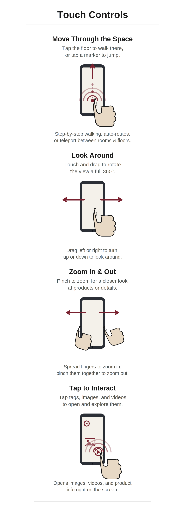

—
—
COURSE OVERVIEW
—
COURSE CURRICULUM
Pick a course from the list to view its overview, curriculum, and immersive options.
—
—
Nudge the satellite image until buildings line up with their polygons. Arrow keys, +/− to scale.
001.0001.000
Tip: hold Shift while nudging for 10× steps. Values
are auto-saved in this browser; paste them into config.js
to share across devices.
Welcome to the South Carolina State University Virtual Campus Tour. Explore academic buildings, athletic facilities, and landmarks across campus, or follow a guided tour through key locations. Some stops include immersive street-view experiences.
—


